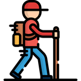

In this release
If you play on a Jagex Account and your profile still has an old saved password, a Break Handler break could end with the client typing "default" into the login box instead of logging your character back in. In 2.6.49 the profile your client started on always relogs the Jagex character it was launched with. The walker also waits for you to start moving before it clicks again, so minimap and game-view clicks stop cancelling each other, and minigame teleports now click the destination you need and are only used when they save a long trip. Inventory Setups got eight fixes that affect every script that loads gear from a setup, such as AIO Fighter, Vorkath and Barrows. On the Hub, Guardians of the Rift leaves the large mine at your fragment cap, Revenant Killer stops trying to teleport with a ring that can't, MM Caves accepts Kandarin headgear as a light source, and Barrows never equips a broken piece. This release ships Microbot client 2.6.49 together with those Hub updates.
Relogs keep your Jagex character
 When you start Microbot through the Jagex launcher, or through the RuneLite launcher with a
When you start Microbot through the Jagex launcher, or through the RuneLite launcher with a credentials.properties file in your .runelite folder, the client logs you back in by itself after a break or a disconnect. Auto Login, the Break Handler, scripts that relog and Load in the profile panel all use the same login. 2.6.46 and 2.6.47 fixed most of the cases where that login typed your profile's name, usually "default", into the username box instead of picking your Jagex character.
One case was still open in 2.6.48: a profile that has a saved password. You may have one from the old Auto Login, which needed a password, or because you once typed it into the profile editor. On those profiles the client dropped your Jagex character and typed the profile name and the old password, and you were left on the login screen.
The Break Handler logs you out for a 10-minute break. When the break ends, the client clears your Jagex character and types "default" and your old saved password. The login fails and your script never resumes.
When the break ends, the client logs the Jagex character you launched with straight back in. Nothing is typed into the username box, and your script carries on.
The rule is now simple: the profile your client started on always relogs the Jagex character it was launched with, whatever password is saved on it. So does a profile you set as the default for that RuneScape account. Logging in by hand works as before.
When a profile with a saved password relogs your Jagex character, the client writes one warning to its log that names the character. To log in with the saved username and password instead, choose Play without Jagex Account in the Microbot launcher, remove credentials.properties from your .runelite folder if you start from the RuneLite launcher, or switch to that profile after the client has started. A profile you switch to after launch that has a password and isn't linked to your Jagex character still logs in with that password.
Walker clicks stop cancelling each other

A player walking from the Lava Maze to Ferox Enclave through the Wilderness, without teleports, watched the walker click a minimap tile about 9 tiles ahead and then, almost at once, a tile in the game view only 3 tiles ahead. The second click replaced the first, the character barely moved, and in the Wilderness that cost them several deaths.When you're standing still, the game often takes more than one tick to act on a click. The walker checked after about 0.6 seconds, saw you hadn't moved yet, and clicked again. Now it waits up to about 1.2 seconds longer for you to start moving before it treats a click as missed. If you're already walking, nothing changes. When a click really does nothing, for example in front of a closed gate, the walker now pauses about 1.8 seconds instead of 0.6 before it clicks again or deals with the gate.
Minigame teleports pick the right destination
The walker can use the minigame teleports in the Grouping tab, such as Tithe Farm, Castle Wars or Barbarian Assault. Players saw it open and close the destination dropdown over and over: the click meant for the destination landed on the dropdown button again and closed the list. Now it clicks inside the destination row. If the list doesn't open or a click fails, the walker gives up on that teleport after a few tries and takes another route, instead of retrying forever.
The walker also used minigame teleports far too often. You can only use one every 20 minutes and each one takes several clicks, but the walker treated them as almost free, so it would teleport for a trip that was quicker to walk. They now count as 200 extra tiles of walking, so the walker only uses one when it saves a long trip. Going from the Grand Exchange to Tithe Farm still takes the Tithe Farm teleport and gets you there in about 18 seconds. When it's on cooldown, the walker uses another teleport.
Inventory Setups load your gear reliably
 Many Hub scripts load your gear from an Inventory Setup, among them AIO Fighter, Vorkath, Barrows, Royal Titans, Demonic Gorilla Killer, Gem Crab Killer, Ensouled Head Slayer and Moons of Peril. We wrote 112 new tests for the Inventory Setups plugin and the code those scripts use to load a setup, and they found eight bugs. Here is what you'll notice:
Many Hub scripts load your gear from an Inventory Setup, among them AIO Fighter, Vorkath, Barrows, Royal Titans, Demonic Gorilla Killer, Gem Crab Killer, Ensouled Head Slayer and Moons of Peril. We wrote 112 new tests for the Inventory Setups plugin and the code those scripts use to load a setup, and they found eight bugs. Here is what you'll notice:
- Items you removed no longer count as missing. If you removed an item from a slot in the Inventory Setups panel, scripts kept going to the bank for it on every load, or stopped. An emptied slot now counts as empty. An emptied fuzzy inventory slot also no longer hides items that aren't in your setup, so those get banked as they should.
- Degraded Barrows gear stays on. Wearing Dharok's helm 100 with a setup that lists Dharok's helm made scripts bank your whole worn Barrows set on every load. Degraded pieces now count as the setup item.
- A broken Barrows piece pauses your script with a message. A broken piece such as Dharok's helm 0 can't be worn. If it's your only copy, the script now pauses, as it does for other missing setup gear, and says the piece is broken: "Repair it (Bob in Lumbridge or an armour stand in your house) or remove it from the setup." If you also have a working copy, the script picks that one.
- Imported setups pass the setup check. Setups imported from the RuneLite Inventory Setups plugin expected every item in the first inventory slot, so the check always failed. Imported items now keep their order, and setups you imported earlier are repaired the next time the client loads them.
- Update all instances no longer piles items into one slot. Replacing an item in every setup at once gave every copy the slot you clicked. Setups damaged this way are repaired when the client loads them. If one still fails its check after you use it, press the update inventory button once to save it again.
- Aether runes no longer break the rune pouch load. The client doesn't know aether runes yet, so loading a setup with them in the pouch emptied the whole pouch and threw an error. They are now skipped with a warning in the log. Fill those yourself, or remove them from the setup.
- Granite cannonballs count as cannonballs in fuzzy slots again, for highlighting and the bank filter.
- Pressing Enter on an empty amount prompt sets the item's amount to 1 instead of throwing an error.
- A setup file with a field the client didn't recognise could freeze the loading of all your setups. Unknown fields are now skipped.
Plugin updates
One player set Max. amount fragments to 130, and the script kept mining the large guardian remains game after game. When they sent a bug report they had 732 guardian fragments and no essence. The script only left the large mine based on the portal timer, and when it couldn't read that timer it kept mining. Now it leaves the large mine as soon as you reach your fragment cap, and during a game it also leaves when it can't read the portal time.
When a PKer showed up, the script tried to teleport out with whatever ring or amulet you were wearing. With a Ring of wealth, it clicked "Ferox Enclave" on a ring that doesn't have that teleport, failed and tried again, 2530 times in one report while the PKer kept attacking. Now it only teleports with a charged Ring of dueling at level 20 and below, or a charged Amulet of glory from level 20 to 30. After 5 failed clicks, or when you wear neither, it runs to Ferox Enclave on foot and logs why, for example "Teleport with Ring of dueling(8) failed 5 times, running to Ferox Enclave on foot." A bank trip with an uncharged ring now walks to Ferox too.
A player in the Ape Atoll dungeon with Kandarin headgear 3 as their light source pressed start, and within a second or two the script decided they had no light, walked out of the dungeon, logged out and stopped. Kandarin headgear 1 to 4 now count, the Abyssal lantern is recognised, and torches and candles match their lit names, Lit torch and Lit candle. An unlit candle no longer passes. Without a light source, the stop message now lists every item that works: "MM Caves stopped: no lit light source found. Carry or wear one of: ... Unlit torches and candles do not count, so light them first."
When a piece of your gear didn't equip, the script's backup step could withdraw a broken copy such as Dharok's helm 0 instead of your working one, or pick Rune platebody (g) from an earlier bank slot when your setup asks for Rune platebody, and then use up all 8 attempts. It now wears the exact item from your setup and never a broken piece. If your only copy is broken, Barrows stops and tells you: "Dharok's helm is broken (Dharok's helm 0) and you have no working copy in your bank or inventory. Repair it (Bob in Lumbridge or an armour stand in your house), then start Barrows again." With client 2.6.49 the client usually pauses first with its own repair message. When the client pauses your scripts for missing gear, Barrows stops right away instead of walking back to the bank to try again.
Other changes
For script developers
InventorySetupsItem.isEmptySlotis a new public helper. Use it instead ofitemIsDummyto find empty setup rows: a row emptied in the panel keeps id-1and its settings, anditemIsDummydoesn't recognise it.Rs2InventorySetupnever treats a broken Barrows piece, such asDharok's helm 0, as filling a setup row, and withdraws or wears Barrows rows by id. Unsupported pouch runes are skipped on load with one WARN.- Setup items use the same JSON adapter with every Gson instance, and unknown fields are skipped instead of stalling the read.
- Minigame teleport edges cost an extra 200 tiles in
CollisionMap.teleportCost(), and the bank-versus-direct planner prices teleports with the same cost. Rs2Walkerwaits up to 1.2 s for movement to start before it retries a route click.ConfigManagerrecords the profile the client started on, andLoginManageruses it to keep the launch Jagex character. The login choice is logged at INFO, without names or secrets.- The dashboard game state includes
playerNamewhile you're logged in. - Main was merged back into development after 2.6.48.
How to update
Restart Microbot to get client 2.6.49. Guardians of the Rift 1.5.14, Revenant Killer 2.0.13, MM Caves 1.0.4 and Barrows 2.5.25 show up in the Microbot Hub panel inside the client.
Game images © Jagex Ltd., via the Old School RuneScape Wiki.